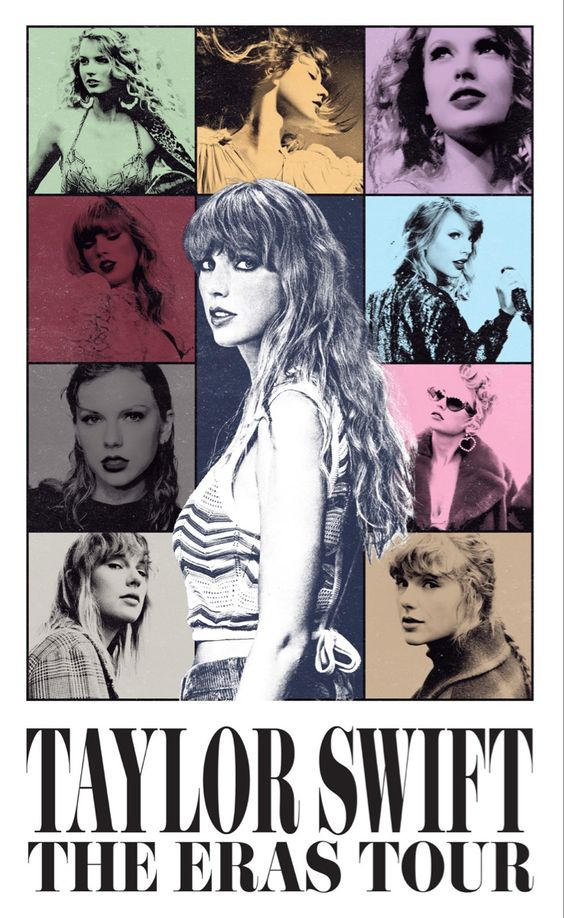

Her Music
(Taylor's Version)
After being inspired by a tweet posted by Kelly Clarkson, Taylor Swift made the decision to rerecord all studio albums she created under Big Machine Records. Her new label, Republic Records, supported her idea and begun with the project late 2020. During 2020, she released two brand new albums that were not originally recorded under her previous label, folklore and evermore. Before then, Lover, was released in 2019 as one of her owned albums. The only other album she has released as her own original is Midnights which released late 2022. To date, she has yet to rerelease Reputation and Taylor Swift and has a release date of October 27th for 1989 (Taylor's Version). All other albums under Big Machine Records have been rerecorded and rereleased.
- Lover - 2019
- folklore - 2020
- evermore - 2020
- Fearless (Taylor's Version) - Rereleased 2021
- Red (Taylor's Version) - Rereleased 2021
- Midnights - 2022
- Speak Now (Taylor's Version) - Rereleased 2023
- 1989 (Taylor's Version) - Announced August 2023, Rerelease date schedule for October 27, 2023
- Reputation (Taylor's Version) - Predicted rerelease in 2024
The Eras Tour
The Eras Tour is a one stop shop for all of Taylor's albums. She and her team have created a nearly three and a half hour long show with multiple songs from each one of her albums. The Eras Tour began on March 17, 2023, in Glendale, US, before continuing on to a total of five continents and ending November 23, 2024, in Toronto, Canada. This is her second all-stadium tour after her Reputation Stadium Tour in 2018. Throughout the tour, there have been tributes from governments, when Santa Clara was renamed "Swiftie Clara" from July 28 to July 29 while she performed in town, and album rereleases, such as Speak Now (Taylor's Version) and 1989 (Taylor's Version).
